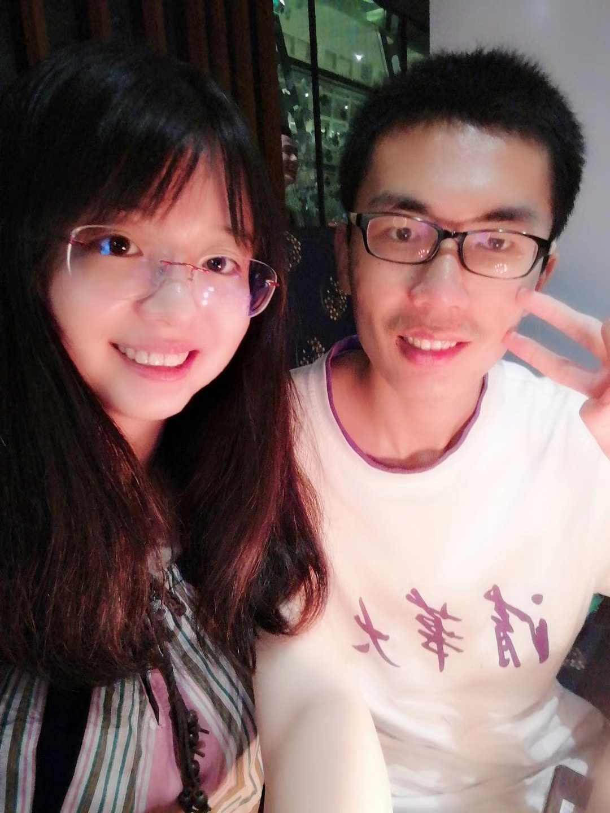
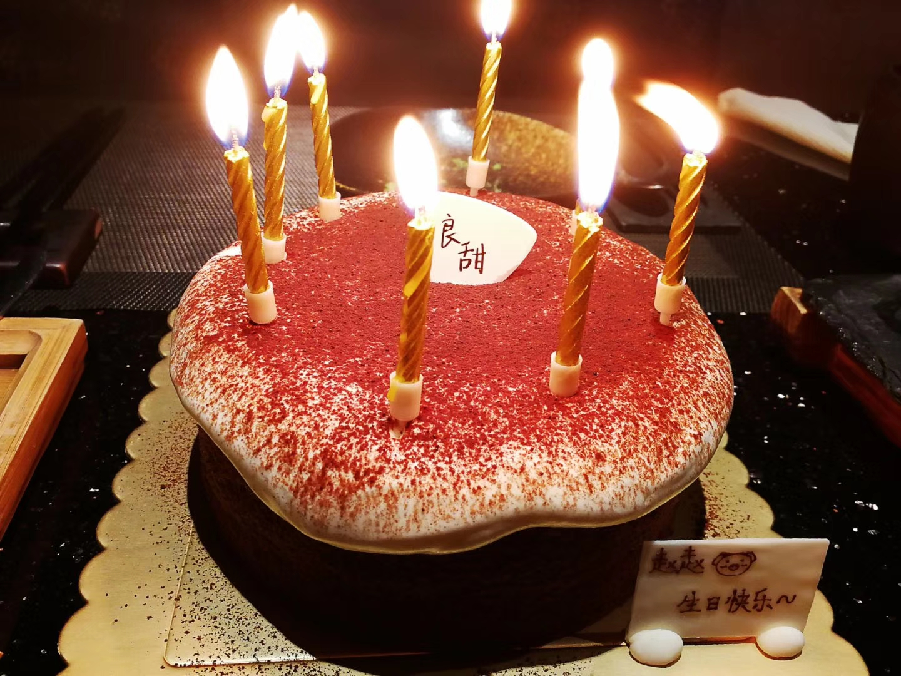
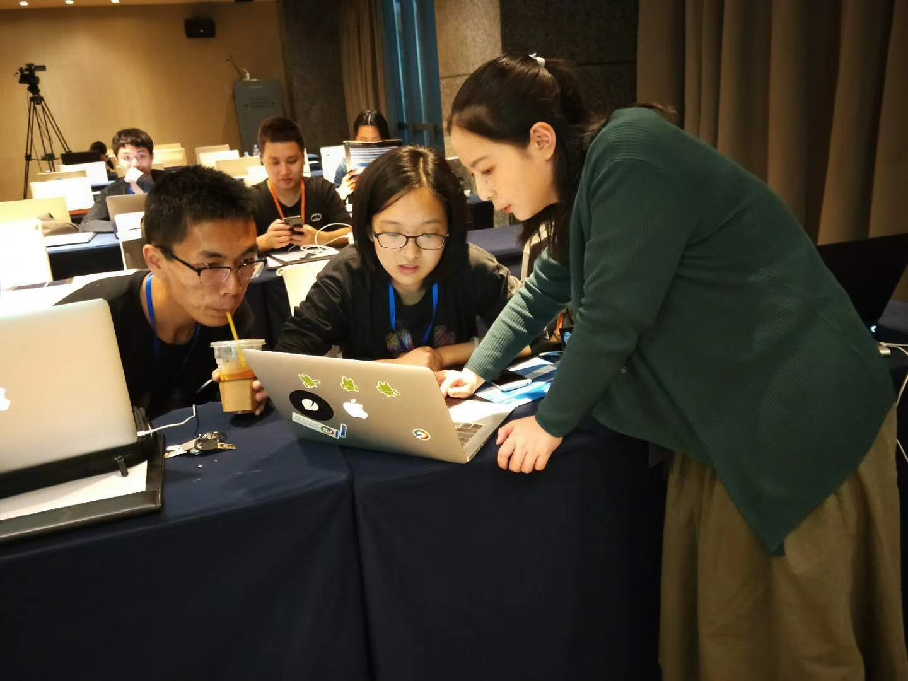
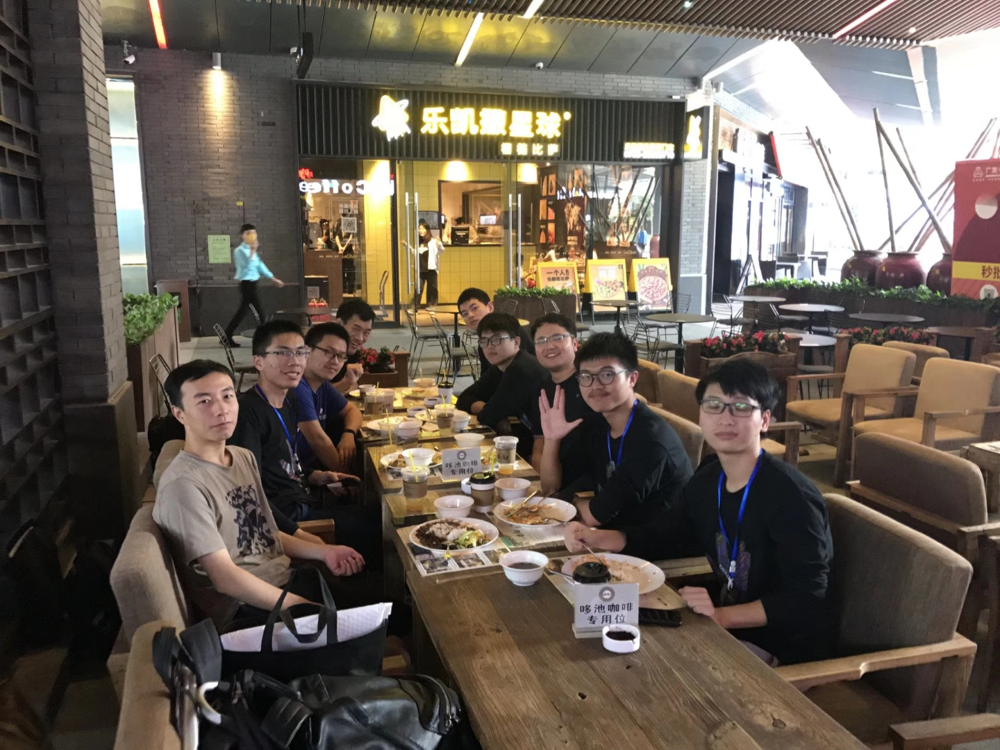
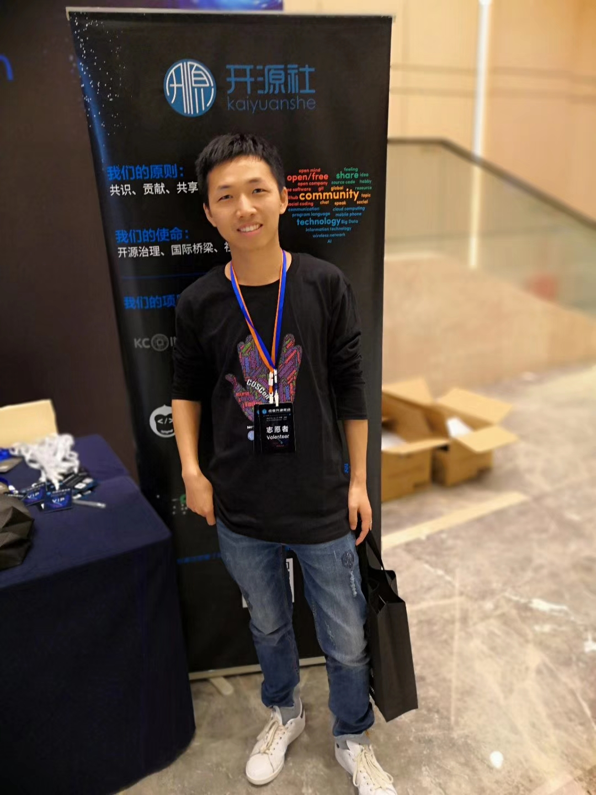
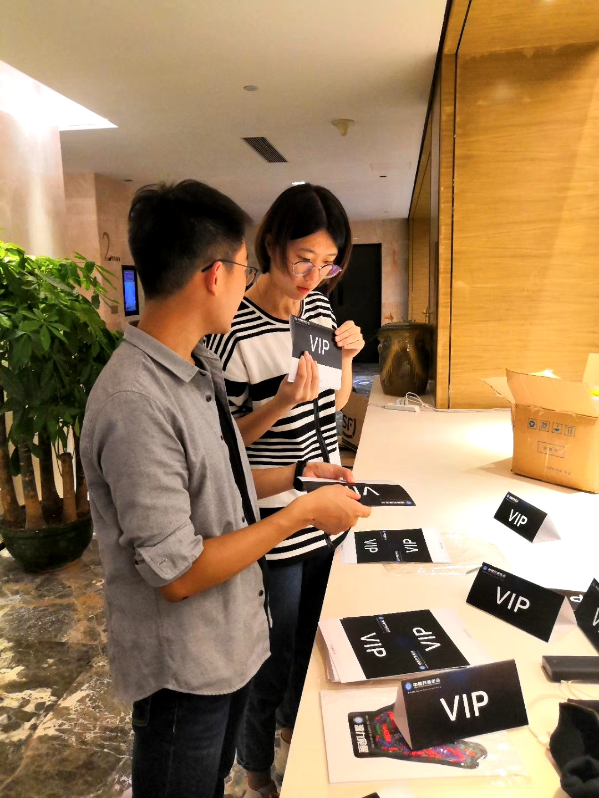

服务器
2018/4/10
实验室还没有计算服务器，下周要做数据挖掘课程的 mini talk,需要用 python 算一些东西，可能用时比较久，只能配置 自己工位上的工作站了。
要锻炼
2018/4/10 今天统计信号处理的廖老师说昨晚电子系又有一位老师英年早逝了，又举了其他的例子，嘱咐我们要加强体育锻炼， 我室友赵鹏阳说自己受到了惊吓。
要改掉的坏毛病
2018/4/26
- 说话吸气
- 走路驼背
- 随手关宿舍门、洗手间门和热水器
- 剪指甲等清洁不要直接弄到地板上
- 关于称呼，如A是B的师兄，在B面前要表现出对A的尊重，不能直呼其名，而应称为 A师兄。
- 装订形式、订左上角、用一个钉
- 看脸的时代在面部护理上需要格外注意
谢谢喵喵陪我过24岁生日~
2018/7/11
 
summary
2018/8/8
推送：海南儋州支教总结
CosCon 2018
2018/10/21
百度 echarts 开发者教学

深圳北京同济华师高校代表

辅导员喻越

北大同学

另感谢高校组组长、南科大先进院志愿者及负责同学。
2018中国开源年会
warm winter
2018/12/9
南燕青协携手南国紫荆，用暖冬温暖寒冬
推送：暖冬行动 | “暖冬有你，温暖同行” 志愿捐衣活动成功举行
autism
2018/12/16
推送：活动进行时｜为星儿点灯